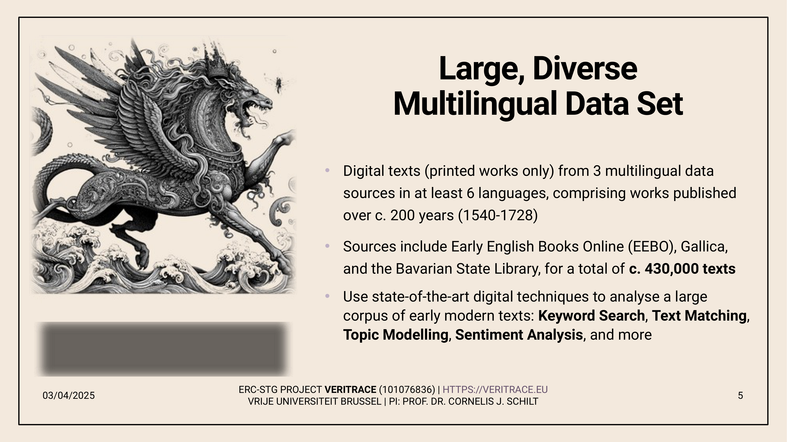
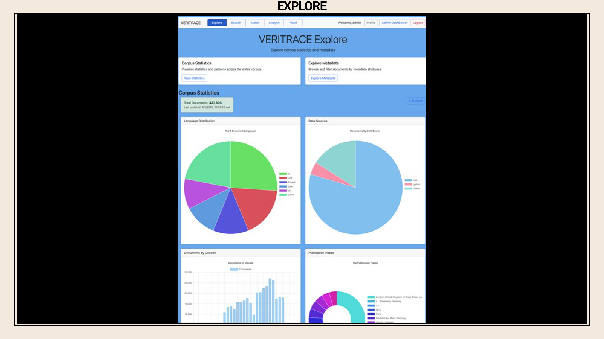
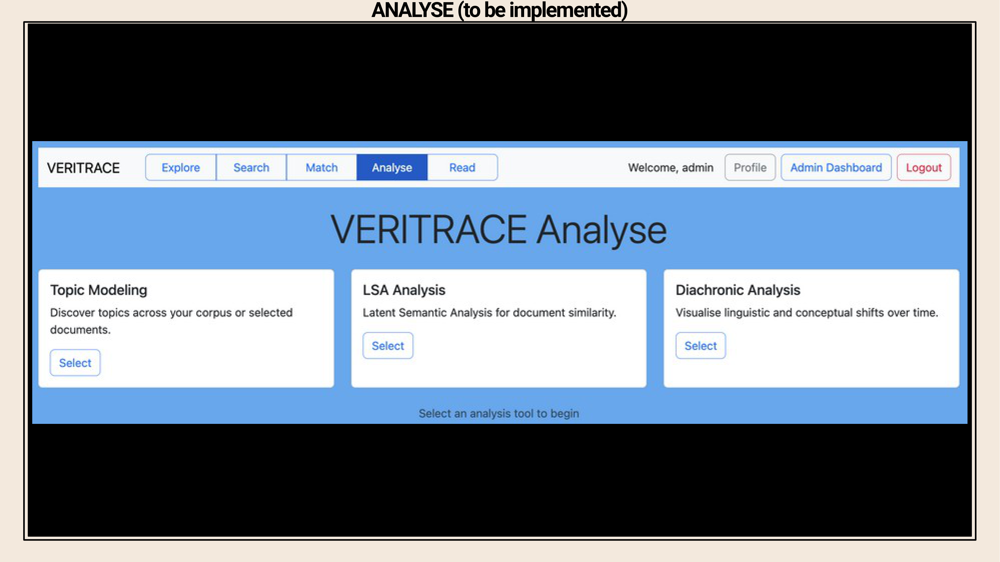
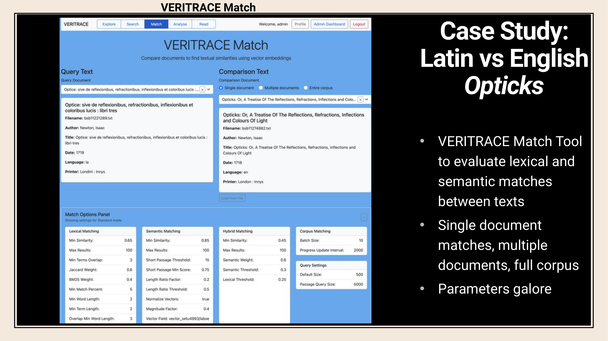
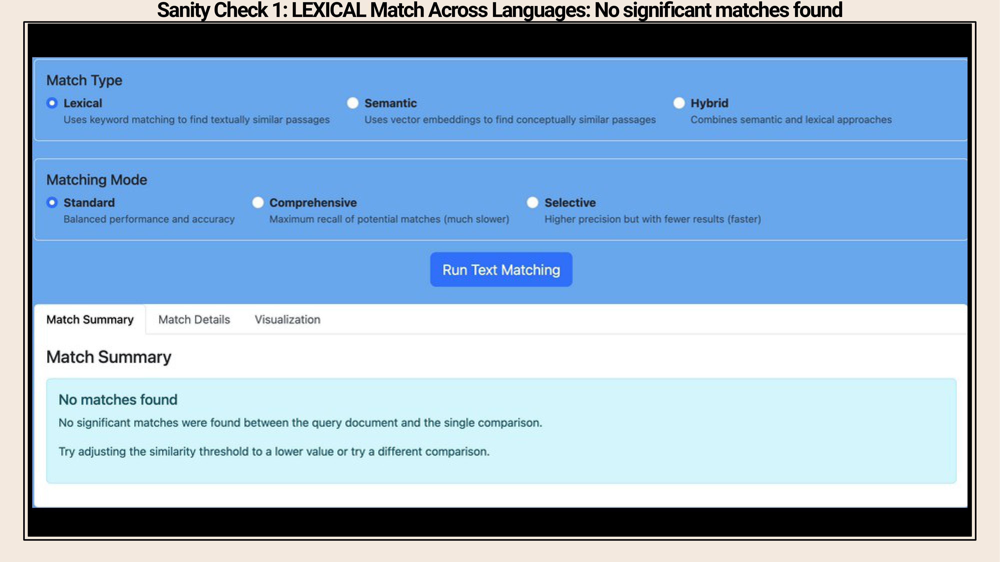
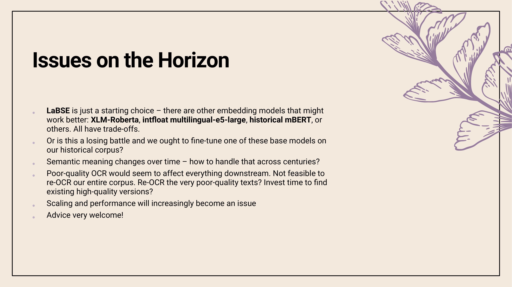

6 Towards Computational HPSS: Tracing the Influence of the Ancient Wisdom Tradition on Early Modern Science using the LLM-powered Semantic Matching Tool of the VERITRACE project
Overview
The VERITRACE project, a five-year ERC Starting Grant at Vrije Universiteit Brussel, investigates the profound influence of the ‘ancient wisdom’ tradition upon early modern natural philosophy. The team analyses a vast, multilingual corpus of 430,000 printed books from 1540 to 1728, sourced from Early English Books Online (EEBO), Gallica, and the Bavarian State Library. This ambitious undertaking applies a computational approach to the History, Philosophy, and Sociology of Science (HPSS), aiming to uncover previously overlooked intellectual networks.
Central to this endeavour is the identification of both direct lexical reuse and more subtle, indirect semantic reuse across texts. The project’s alpha-stage web application, VERITRACE, built upon an Elasticsearch backend, facilitates corpus exploration, advanced keyword searching, and sophisticated text matching. The team confronts significant challenges, including the variable quality of Optical Character Recognition (OCR), the complexities of early modern typography across six languages, and the sheer scale of the data.
To address these obstacles, the authors employ Large Language Models (LLMs) for two distinct purposes. GPT-based models function as ‘judges’ to enrich and clean bibliographic metadata, whilst BERT-based models such as LaBSE generate the vector embeddings that encode semantic meaning for passage comparison. Ultimately, the project seeks to provide scholars with a powerful tool to discover new patterns in intellectual history, effectively creating an ‘early modern plagiarism detector’ that illuminates the ‘great unread’ texts of the period.
6.1 Project Context and Research Objectives

Led by Professor Cornelis J. Schilt at Vrije Universiteit Brussel, the VERITRACE project is a five-year initiative funded by an ERC Starting Grant. Its central objective is to trace the influence of the ‘ancient wisdom’ tradition on the evolution of early modern natural philosophy and science. The investigation centres on a core collection of 140 works representing this tradition, including such texts as the Chaldean Oracles, the Sibylline Oracles, the Orphic Hymns, and the historically significant Corpus Hermeticum.
The team’s inquiry, however, extends far beyond established connections, such as Isaac Newton’s documented engagement with the Sibylline Oracles or Johannes Kepler’s knowledge of the Corpus Hermeticum. A primary goal is to delve deeper, uncovering a much broader and often neglected network of texts and authors. By focusing on what the authors term the ‘great unread’—a vast body of work by often lesser-known figures—the project aims to reveal a more comprehensive picture of this tradition’s impact.
6.2 Computational Methodology for HPSS

The project’s authors adopt a computational framework for the History, Philosophy, and Sociology of Science (HPSS), applying large-scale, multilingual exploration to their core research questions. A central feature of this methodology is the identification of textual reuse across the extensive corpus. The team has developed systems to detect both direct lexical reuse, where wording is identical or highly similar, and indirect semantic reuse, where concepts are shared without verbatim overlap.
This capability, which functions as a form of ‘early modern plagiarism detector’, is not merely for identifying copied text. Rather, the approach seeks to uncover networks of texts, passages, themes, and authors that traditional scholarship may have overlooked. By systematically mapping these connections, the team hopes to reveal new, large-scale patterns in intellectual history and the philosophy of science, offering fresh perspectives on the period’s intellectual landscape.
6.3 Dataset Composition and Scope

To facilitate this investigation, the team has assembled a large and diverse multilingual dataset focused exclusively on printed books and texts; handwritten materials are deliberately excluded to maintain a manageable scope. The corpus comprises approximately 430,000 books in six different languages, covering a period of nearly 200 years from 1540 to 1728. This timeframe was chosen to begin at a significant point in printing history and to conclude shortly after the death of Isaac Newton.
The data originates from three principal sources. These include the Early English Books Online (EEBO) collection, digitised materials from the French National Library accessed via Gallica, and the project’s largest contributor, the Bavarian State Library. This vast collection of texts is analysed using a suite of state-of-the-art digital techniques.
6.4 Core Challenges and LLM Applications

The project team confronts several core challenges inherent in working with historical texts at scale. A primary issue stems from the variable quality of Optical Character Recognition (OCR), as the team receives raw text directly from libraries in formats like XML, HOCR, and HTML, without access to the ground truth page images for verification. This poor OCR quality significantly affects all downstream processing. Furthermore, the work must navigate the complexities of early modern typography and semantics across at least six languages, alongside the sheer scale of managing hundreds of thousands of texts.
To address these issues, the authors apply Large Language Models (LLMs) in two distinct ways. On the decoder side, GPT-based models function as ‘judges’ to help enrich and clean the vast collection of bibliographic metadata. This report, however, focuses on the encoder-side application, where the team uses BERT-based LLMs to generate vector embeddings. These embeddings encode the semantic meaning of sentences and short passages, forming the foundation for the project’s sophisticated text-matching capabilities.
6.5 LLMs as Judges for Metadata Enrichment

The team is exploring the use of LLMs to automate the highly tedious task of enriching and verifying bibliographic metadata. The manual process required each team member to compare 10,000 pairs of records to determine if they referred to the same underlying printed text. To streamline this, the authors developed The LLM Bench, a system that employs a panel of open-source models like Llama to act as ‘judges’ in evaluating these potential matches.
The models receive extensive prompt guidelines and are tasked with producing a decision, a confidence level, and detailed reasoning. A significant hurdle, however, complicates this approach: the models frequently hallucinate information. Whilst forcing more structured output can eliminate these hallucinations, it comes at a cost. The models then tend to provide generic, less useful responses, diminishing the value of their reasoning. Consequently, this application remains a work-in-progress as the team seeks to balance structured output with insightful analysis to create a genuinely useful automation tool.
6.6 The VERITRACE Web Application and Pipeline

The project’s central output is the VERITRACE web application, currently an alpha-stage proof-of-concept that is not yet publicly available. For its semantic analysis features, the application is currently testing a BERT-based model, LaBSE, to generate vector embeddings, although the team anticipates that this model may not be sufficient for the final product.
Underpinning the application is a complex data processing pipeline required to prepare the raw texts for the Elasticsearch database that serves as the backend. This multi-stage pipeline involves numerous steps, including text extraction, the creation of positional mappings, text segmentation into passages, and OCR quality assessment. Each of these steps demands careful optimisation to handle the data’s complexity and ensure the quality of the final indexed content.
6.7 Corpus Exploration and Metadata Analysis

The VERITRACE web application features an ‘Explore’ section that provides users with high-level statistics about the corpus, which currently contains 427,305 metadata records in its prototype stage. This data is served directly from a MongoDB database. A ‘Metadata Explorer’ allows for deeper investigation, where users can inspect the rich metadata generated for each text.
A crucial feature is the detailed language identification, which is performed on text segments as small as 50 characters. Such granularity proves essential for accurately cataloguing the multilingual texts common throughout the corpus. For instance, the system can identify a book as being 85% Latin and 15% Greek, information not typically available in standard library metadata. Furthermore, the system attempts to assess OCR quality on a page-by-page basis, providing a nuanced quality metric despite the challenge of not having ground truth images for comparison.
6.8 Advanced Keyword Search Functionality

A central feature for scholars is the ‘Search’ section, which leverages the power of Elasticsearch to offer both basic and advanced querying. Even in its prototype stage with only 132 texts, the search index is a substantial 15 gigabytes, indicating that the full 430,000-text corpus will scale into the terabytes. Users can perform simple keyword searches, but the system’s strength lies in its advanced capabilities.
Scholars can construct fielded queries, for example, to find the keyword ‘Hermes’ only within works authored by ‘Kepler’. The system also supports complex nested queries with Boolean operators and, notably, proximity queries. This allows a user to search for instances where two terms, such as ‘Hermes’ and ‘Plato’, are mentioned within a specified word distance of each other, enabling more nuanced textual investigations.
6.9 Planned Analysis and Reading Interfaces

The application’s roadmap includes a planned ‘Analyse’ section, which will offer users a suite of advanced analytical tools. These will include topic modelling, Latent Semantic Analysis (LSA), and diachronic analysis to track changes in language and concepts over time.
In contrast, the ‘Read’ section is already functional. It provides scholars with direct access to the source material, recognising their need to consult original texts beyond the OCR data. This section integrates a Mirador viewer, which displays high-quality PDF facsimiles of every text in the corpus. This feature allows for a seamless reading experience, similar to using a modern digital library portal, with all relevant bibliographic metadata displayed alongside the text.
6.10 The Text Matching Tool: Functionality and Parameters

The application’s most innovative component is the ‘Match’ section, designed to identify textual reuse. The tool is highly flexible, allowing users to compare a single text against another, or to compare a collection of documents—such as all of Kepler’s works—against another text. The ultimate ambition is to allow a single text to be compared against the entire corpus, a feature that poses immense computational challenges regarding user wait times.
Crucially, the interface exposes technical parameters to the user, allowing them to tweak settings like the minimum similarity score. The tool offers two primary match types: lexical matching, which identifies shared vocabulary, and semantic matching, which uses vector embeddings to find conceptually similar passages even if they share no keywords. This latter capability is vital for cross-lingual comparisons. Users can also select from different performance modes, including a standard mode, a computationally intensive ‘comprehensive’ mode, and a ‘faster’ mode for quick checks.
6.11 Case Study: Lexical and Semantic Matching of Newton’s Opticks

To validate the matching tool, the team performed a series of sanity checks using the Latin (1719) and English (1718) editions of Isaac Newton’s Opticks. A lexical match between the two different-language texts correctly returned no results in standard mode, as expected. However, switching to the more intensive ‘comprehensive’ mode revealed three matches, correctly identifying small sections of English text present within the predominantly Latin volume. The interface presents these results with a quality score, a coverage score, and details on the millions of comparisons performed.
Conversely, a semantic match between the two editions produced reasonable results. The system successfully identified conceptually similar passages, such as discussions of colours, demonstrating its ability to work across translations. Nevertheless, some metrics, like the coverage score, appeared inaccurate, although this might reflect genuine differences between the two editions, as the Latin version is considerably longer. Despite these partial successes, the authors conclude that the current embedding model is not yet sufficiently robust for the project’s demanding requirements.
6.12 Future Challenges and Strategic Considerations

Looking ahead, the project team must navigate several significant challenges. The choice of an embedding model is paramount; the current model is likely insufficient, forcing a decision between adopting a more accurate but resource-intensive pre-trained model or undertaking the complex task of fine-tuning a base model specifically on the unique historical corpus. A fundamental conceptual challenge arises from semantic drift: how can a model effectively map the meaning of words that changed over two centuries and across multiple languages into a single, coherent vector space?
Practically, the persistent problem of poor OCR quality cascades through the entire system, hindering fundamental tasks like sentence segmentation. As re-OCRing the entire 430,000-book corpus is infeasible, the team is considering targeted re-OCRing of the worst-performing texts or supplementing the corpus with high-quality versions from other sources. Finally, scaling and performance remain a major concern. With queries on a tiny 132-text prototype already taking 15 seconds, ensuring acceptable performance on the full corpus will require substantial optimisation and computational resources.